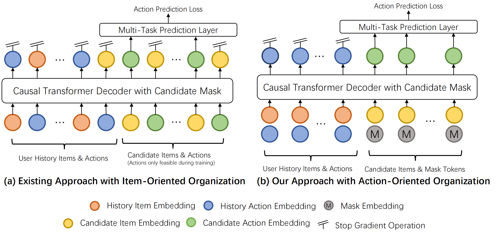
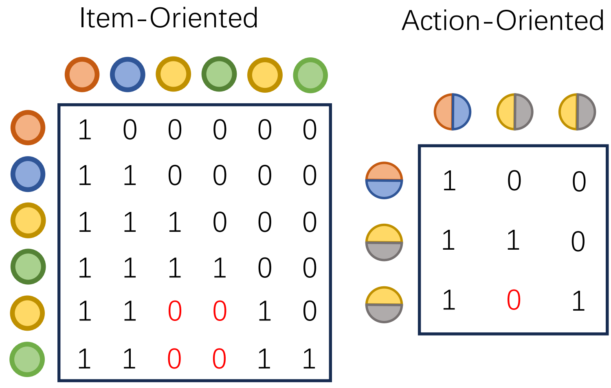
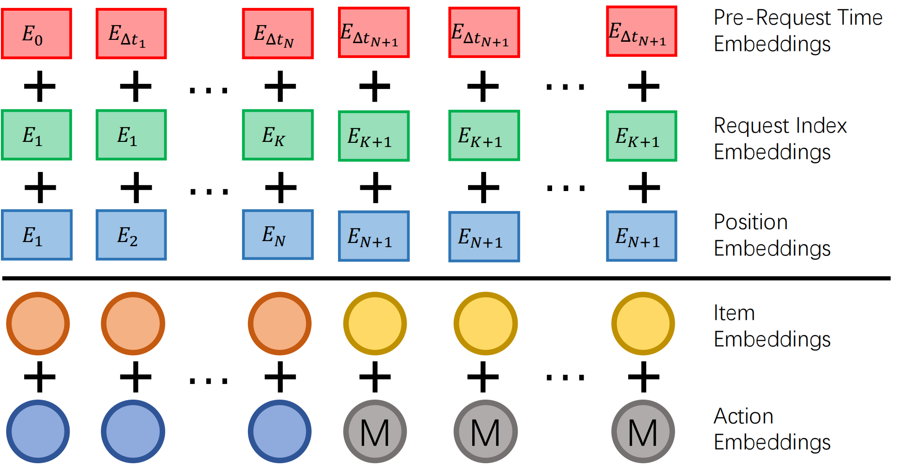

6.1.2. 生成式推荐的工程突破¶
HSTU的出现证明了推荐模型也能像语言模型一样遵循scaling law，Meta用万亿参数模型验证了这一点。然而，HSTU的成功建立在Meta的大规模计算资源之上：万亿参数的模型、数千GPU集群、每天数十亿用户的海量数据。这个门槛对绝大多数公司来说过高。
这引出了一个关键问题：HSTU的设计中哪些是必需的？哪些可以优化？理解这些问题是在资源受限环境中落地生成式推荐的前提。
小红书团队在实践中面临这样的挑战。他们希望为服务数亿用户的推荐系统引入生成式推荐能力，这需要回答一个根本问题：生成式推荐的有效性究竟来自哪里？
6.1.2.1. 追本溯源：什么才是本质¶
要优化HSTU，首先要理解它的有效性来源。HSTU是一个复杂系统，生成式架构、自回归训练、序列化组织、统一特征空间等因素共同作用。但对于工程实践，需要明确每个因素的真实贡献。如果某个设计只贡献0.1%性能却带来10倍开销，在资源受限时应该考虑放弃。
小红书团队在数千亿真实曝光日志上进行了系统性实验。他们以HSTU为基准，每次改变一个设计决策，观察性能变化。首先需要验证的问题是：自回归机制是否必要？
回顾HSTU的设计：它使用causal mask训练，确保位置\(i\)的token只能看到之前的信息。但HSTU只在候选物品位置计算loss，历史位置不参与。这类似大语言模型的监督微调，用户历史和候选构成prompt，模型预测行为反馈。在LLM中，SFT保持自回归是为了延续预训练能力。但推荐模型通常没有预训练阶段，自回归会不会只是个可选的trick？
团队设计了两组对照实验。
第一组在历史位置也计算loss。如果自回归只是一个可选技巧，更多监督信号应该提升性能。但实验结果显示AUC显著下降。这可以用“one-epoch问题” (Huang et al., 2025) 解释：推荐数据中，用户ID、物品ID等稀疏特征占据绝大部分参数。由于长尾分布，大量ID只出现一两次。在历史位置计算loss时，模型倾向于“记住”每个交互细节，但这难以泛化。
举个例子，假设用户小明的历史序列是“看了科技博主A的视频→点赞→看了美食博主B的视频→收藏”。如果在历史位置计算loss，模型会学习预测：“看了科技博主A后会点赞”。但这个模式难以泛化，测试集中小明可能看科技博主C的视频，模型却没见过这个组合。此外，如果只训练一个epoch（推荐系统的常见做法），模型没有机会纠正这种过拟合。
第二组实验在历史位置使用全可见mask，允许双向attention。从特征交互角度看这应该增强表达能力，但性能仍然下降，且随模型规模增大下降幅度扩大。全可见mask破坏了关键的归纳偏置，即用户兴趣演化的因果性。Causal mask强制模型学习因果结构，而非任意统计相关性。
继续上面的例子，如果允许双向attention，模型在处理“看了科技博主A”这个行为时，能看到后面的“点赞”和“看了美食博主B”。这可能让模型学到虚假关联，比如“因为后面看了美食视频，所以给科技视频点赞”。但在现实中，用户在时刻\(t\)的行为不可能被未来的行为影响。Causal mask通过禁止“看到未来”，强制模型学习真实的因果关系。
两组实验指向同一结论：自回归机制是生成式推荐的本质特征。它通过架构约束引入了有益的归纳偏置，帮助模型学习行为的因果结构，同时抑制对稀疏特征的过拟合。
相比之下，样本组织方式的影响较小。传统DLRM采用point-wise训练，每个样本对应一次交互。HSTU采用user-level训练，将同一用户的多次交互组织成序列。这看似能带来梯度估计的稳定性和防止信息泄露的好处。但实验显示，保持序列化组织但只在最后位置计算loss（模拟point-wise），性能几乎没有下降。
这说明user-level组织主要带来工程便利性（更高训练吞吐、更容易实现KV caching），而非性能的根本来源。
这些实验揭示了关键事实：生成式推荐的有效性，主要来自架构设计（特别是自回归机制），而非训练范式的细节。这一发现表明，在保持架构核心的前提下，很多细节可以灵活调整，为工程优化提供了空间。
团队进一步测试了工业常用模块的兼容性。SIM、PPNet、PLE等模块在生成式架构下仍然有效。特征工程方面的实验也有新发现：大部分历史聚合特征的价值大幅降低，因为模型的序列建模能力可以自动学会这些统计规律。但实时特征依然重要，它们捕捉训练窗口外的新信息。此外，特征工程的简化释放了系统资源，为处理更大规模候选集创造了可能。
现在问题变成了：如何设计一个保留核心优势、但计算效率远超HSTU的新架构？
6.1.2.2. Action-Oriented：重新理解任务本质¶
HSTU的核心设计是interleaving formulation，将推荐表示为内容和行为交替的序列：\([\Phi_0, a_0, \Phi_1, a_1, \ldots]\)。这很直观：用户看到内容产生行为，整个过程被建模为马尔可夫链。如图 图6.1.2 所示，内容token和行为token在序列中交替出现。
但分析计算开销会发现问题。假设用户有\(n_c\)次历史交互加\(m\)个候选，序列长度为\(2n_c + m\)。Transformer attention复杂度是\(O(n^2 d)\)，对这个序列就是\(O(4n_c^2 d)\)。当\(n_c\)达到数千时，\(4n_c^2\)带来较大的计算负担。
这引出一个问题：给定用户历史和候选物品，我们真正要预测什么？
答案是：用户对这个物品会产生什么行为反馈\(a\)。在排序任务中，物品是给定的context，行为才是预测目标，如点击概率、观看时长、点赞概率等。物品更像是上下文信息或位置标识符。
让我们用一个具体场景理解这一点。假设你打开小红书，系统要对100个候选笔记排序。对每个笔记，我们需要预测：
你会不会点击它？（点击率）
点击后会看多久？（停留时长）
会不会点赞或收藏？（互动概率）
注意，笔记本身（标题、图片、作者）是已知的、给定的，它们是输入。而你的行为反馈（点击、停留、互动）才是我们要预测的输出。从这个角度看，把“笔记”和“行为”平等对待（各占一个token位置）是否必要？
基于这个观察，一个自然的想法是：既然行为才是预测目标，为什么不直接把行为作为序列主体，把物品作为行为的属性？
传统sequential recommendation将物品作为序列单元：\([x_1, x_2, \ldots]\)。HSTU进化到interleaving：\([x_1, a_1, x_2, a_2, \ldots]\)。GenRank进一步演进：将行为作为序列主体，物品作为行为的属性：
其中\(a_i^{(x_i)}\)表示“用户对物品\(x_i\)产生的行为\(a_i\)”。这就是Action-Oriented Organization（行为导向组织）。
{kind=link}

图6.1.7 Action-Oriented序列组织方式¶
技术实现上，每个token表示为：
物品embedding和行为embedding在同一空间直接融合。对于候选物品，使用特殊的mask action embedding：\(e_j = \varphi(x_j) + M\)。
这一设计带来的直接好处是：序列长度减半。从\(2n_c\)降到\(n_c\)，带来显著的效率提升：attention计算量减少75%，线性投影减少50%，激活值内存减少约50%，KV cache大小减半。实验显示，仅这一项改动就带来78.7%的训练加速。
这是否会损失信息？从信息论角度看，用户行为受物品内容强烈影响，两者有很强的互信息。加法操作允许embedding在表示空间“对齐”，重要的维度信号增强，独特的维度信息保留。
举个具体例子理解这个融合过程。假设物品embedding \(\varphi(x_i)\) 和行为embedding \(\phi(a_i)\) 都是768维向量。考虑其中一个维度： - 如果这个维度编码“娱乐性”，搞笑视频的物品embedding在这维度是0.8，“点赞”行为的embedding在这维度是0.6（因为娱乐内容更容易被点赞），相加后是1.4，信号增强 - 如果这个维度编码“视频时长”，只与物品相关，行为embedding在这维度接近0，相加后保留物品信息 - 如果这个维度编码“完播率”，只与行为相关，物品embedding在这维度接近0，相加后保留行为信息
在HSTU中物品token和行为token虽然分开，但在attention中交互最频繁。既然它们总要交互，为何不在token级别就融合？这反而减少了attention层负担。
Action-oriented还带来更灵活的mask设计。排序需要对一批候选评分，有两个冲突需求：候选评分要独立（因为真实展示时用户一次只看一个），但都要看到用户完整历史。GenRank通过特定的mask设计来平衡：历史token间用causal mask，候选可attend到所有历史，但候选间相互屏蔽。这既保证独立性，又为未来扩展到sequential re-ranking留下空间。
{kind=link}

图6.1.8 Action-Oriented的Mask设计¶
6.1.2.3. 位置与时间：该学习什么、该编码什么¶
Action-oriented解决了序列长度问题，但还有另一个瓶颈：位置和时间信息的编码。
在序列建模中，位置和时间信息至关重要。用户两年前的点击和两分钟前的点击影响显然不同。推荐序列不同于语言序列的关键在于：时间是连续且非均匀的，两次交互可能相隔几秒也可能几个月。
HSTU使用相对注意力偏置（RAB）机制，在attention score中加入可学习的bias：
同时考虑位置差异和时间差异，甚至token类型。这个设计能让模型学到时间衰减、不同行为的衰减速度差异等模式。但存在一个问题：计算和存储开销是:math:`O(N^2)`的。
对长度\(N\)的序列，\(\text{rab}_{p,t}(i, j)\)是\(N \times N\)矩阵。前向需要读取，反向需要计算梯度。当\(N\)达到数千时，\(N^2\)可达数百万级别。在现代训练中，内存带宽往往是瓶颈。\(O(N^2)\)的内存访问意味着大量时间消耗在数据传输上，导致GPU利用率降低。
GenRank提出一个替代方案：用轻量级embeddings编码绝对信息，用无参数bias编码相对信息。
核心思想是：不是所有信息都需要\(O(N^2)\)矩阵表达。位置和时间可以分解为两部分：绝对信息（“这是第几个交互”、“发生在什么时候”）和相对信息（“两个交互相隔多远”）。前者用\(O(N)\)的embedding，后者用简单的无参数规则。
GenRank使用三种轻量级embeddings：
Position Embeddings（位置编码）
记录序列索引：\(E_{pe,i} = \Omega_{pe}(i)\)。同一请求内的候选共享位置索引，以确保训练和推理一致性。
Request Index Embeddings（请求索引编码）
捕捉用户行为的burst模式：\(E_{ri,i} = \Omega_{ri}(|\{t_1, \ldots, t_i\}|)\)。用户往往在一次打开APP时连续交互，然后离开。这个编码帮助模型区分同一session内的交互和跨session的交互，前者兴趣连贯，后者可能完全切换。
举个例子，你早上8点打开小红书，连续看了5个科技类笔记，然后关闭APP去上班。中午12点午休时又打开，连续看了3个美食类笔记。从序列角度看，这是8个交互。但从request index看： - 前5个交互的request index都是0（第一次打开） - 后3个交互的request index都是1（第二次打开）
这个信息告诉模型：前5个交互的兴趣很连贯（都在同一session），而第5和第6个交互之间有个边界（跨session），兴趣可能切换。
Pre-Request Time Embeddings（请求间时间编码）
捕捉活跃模式：\(E_{rt,i} = \Omega_{rt}(\text{bucket}(t_i - \max_{t_j < t_i} t_j))\)。编码当前交互距上一次请求的时间间隔，实现自适应衰减：对高频用户短间隔就有信号意义，对低频用户几小时间隔不算什么。
继续上面的例子，第6个交互（中午12点的第一个）距离上一次请求（早上8点）相隔4小时。这个4小时的间隔会被bucket化（比如映射到“2-6小时”这个桶），然后查表得到embedding。对于一个高频用户（每小时都刷），4小时是很长的间隔，兴趣可能已经切换。对于低频用户（每天只刷一两次），4小时不算什么。模型会从数据中学习到这种自适应的衰减模式。
三种embeddings加到token表示：
参数量只有几百万，I/O复杂度是\(O(N)\)，反向传播也是\(O(N)\)。
{kind=link}

图6.1.9 三种Position & Time Embeddings¶
三种embeddings协同示例：用户序列包含8次交互，分为两次请求。位置编码为(0,1,2,3,4,5,6,7)；请求索引编码为(0,0,0,0,0,1,1,1)，表示两次打开APP；请求间时间编码为(0,0,0,0,0,4h,0,0)，表示第二次请求距第一次相隔4小时。
对于相对信息，GenRank借鉴ALiBi (Attention with Linear Biases)的思想。其核心思想是：在attention中给距离较远的query-key对施加惩罚，惩罚与距离成正比：
ALiBi有三个优点：符合直觉（距离越远影响越小），无参数（\(m\)预定义），可融合（直接融入Flash Attention kernel）。GenRank扩展到同时考虑位置和时间：
用一个简单例子理解ALiBi的作用。假设你现在要预测用户对第8个候选的行为，模型需要综合考虑历史上的7次交互。在计算attention时： - 第7次交互（最近）：距离差=1，时间差=5分钟，bias惩罚很小，attention weight高 - 第5次交互（中等距离）：距离差=3，时间差=1小时，bias惩罚中等 - 第1次交互（很久之前）：距离差=7，时间差=1天，bias惩罚很大，attention weight低
这种线性衰减是一个合理的先验，不需要模型从数据中学习“距离越远影响越小”这个普遍规律。
这个设计反映了一个原则：用参数编码复杂的、非线性的模式，用简单规则编码普适的、线性的模式。位置索引、请求归属这些结构性信息，不同位置有不同语义，需要可学习embeddings。而相对距离衰减是普适的、近似线性的规律，直接编码更高效、更稳定。
不是所有模式都需要学习。过度参数化会导致训练效率降低、过拟合风险增加、工程复杂度提升。对具有强先验的模式，直接编码往往是更好的选择。
实验结果显示：采用action-oriented加速78.7%，新position & time biases额外加速25.0%，两者结合总加速94.8%，同时AUC还略微提升。更简单的设计获得了更好的效果，这验证了一个原则：好的归纳偏置比纯粹的参数容量更重要。
从HSTU到GenRank，推荐系统的演进体现了从“工程驱动”到“原理驱动”的转变。GenRank的成功在于理解了生成式推荐的本质：自回归机制是核心，而训练范式等细节可以灵活优化。
Action-oriented organization是主要创新点。通过将行为作为预测目标、物品作为context，序列长度减半，训练速度提升近80%且性能几乎无损。位置与时间编码的重构体现了一个原则：对距离衰减等具有强先验的规律，直接编码比从数据学习更高效。
GenRank的实践表明：新范式的落地需要深入理解有效性来源，在保持本质的前提下进行优化。其计算效率的提升为统一ranking和pre-ranking、test-time scaling、推荐foundation model等方向提供了可能性。
但GenRank在简化的过程中，也做出了一个关键的选择：保持生成式formulation的纯粹性。无论是HSTU的interleaving还是GenRank的action-oriented，都要求模型以自回归的方式建模行为序列，这意味着不能使用任何“向前看”的信息。这个约束带来了架构的优雅和训练的高效，但也意味着必须放弃传统DLRM中那些精心设计的交叉特征，即那些需要同时观察用户历史统计和当前候选属性的特征。
对于拥有海量数据和计算资源的场景，这个取舍是值得的，模型可以从原始序列中自动学习出那些手工特征捕捉的模式。但对于资源受限或特征工程已经高度优化的场景，放弃交叉特征的代价可能过高。
这引出了一个深刻的问题：用户粒度建模的效率优势，是否必然绑定于完整的生成式formulation？ 换句话说，能否在保持样本聚合和计算复用的同时，支持更灵活的建模方式，特别是保留那些经过验证的交叉特征？
美团的MTGR给出了一个创新的答案。它提出了一种“混合范式”：用生成式模型的架构，做判别式的建模。这个看似矛盾的组合，实际上揭示了用户粒度建模更深层的本质。